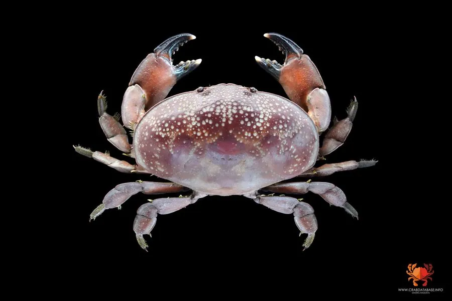

甲壳动物 · 动物界
正直爱洁蟹 Atergatis integerrimus

体色鲜红带白斑的扇蟹，甲壳光滑，行动缓慢，生活在热带珊瑚礁和岩礁间，体内可能含有毒素，不宜食用。
- 分类
- 门节肢动物门纲软甲纲目十足目科扇蟹科属爱洁蟹属
- 栖息环境
- 珊瑚礁、岩礁和潮间带石缝中
- 地理分布
- 印度-太平洋热带海域，包括中国南海
- 保护级别
- IUCN 暂无评估；中国未列入国家重点保护名录
物种志
正直爱洁蟹头胸甲宽 5–8 cm，呈横椭圆形，体色鲜红或橙红，表面有白色斑点，甲壳光滑，边缘完整；螯足粗壮，指节黑色，步足短而粗。
它分布于印度-太平洋的热带海域，包括中国南海、东南亚和日本南部，栖息于珊瑚礁、岩礁和潮间带石缝中，昼伏夜出，取食藻类、有机碎屑和小型底栖动物。正直爱洁蟹的体色鲜艳，在礁石间很醒目；它行动缓慢，遇到危险时多靠躲藏而不是逃跑。扇蟹科的一些种类体内含有河豚毒素或类似毒素，食用后可能中毒，因此不要随意采食不认识的蟹类；它的甲壳边缘光滑完整，“正直”之名由此而来。目前 IUCN 暂无评估；中国未列入国家重点保护名录，在礁石间观察时请只拍照不要捕捉。
形态与习性
- 食性藻类、有机碎屑和小型底栖动物
- 体型头胸甲宽 5–8 cm
- 识别体色鲜红带白斑，甲壳光滑，边缘完整
- 习性昼伏夜出，行动缓慢，靠躲藏防御
- 毒性体内可能含河豚毒素，不宜食用
- 分布印度-太平洋热带珊瑚礁和岩礁
趣味知识
- 正直爱洁蟹的甲壳边缘光滑完整，没有明显锯齿。
- 它颜色鲜艳却行动缓慢，遇到危险时更喜欢躲进石缝。
- 扇蟹科不少种类含河豚毒素，不认识的蟹千万不要吃。